현장 문제 세 가지를 실제로 개발한 프로그램이 어떤 절차로 해결하는지, 현장기사 휴대폰과 관리자 PC 화면으로 순서대로 보여 드립니다.
AI 연출 사진AI 연출 사진AI 연출 사진
핵심 기술 · 한 문장
현장 상태의 변화를 받아, 후속 현장의 지연 위험을 계산하고, 관리자의 대응 순서를 정하는 기술
신청기술복수 현장 업무 위험관리 AX 시스템
관련 특허10-2026-01739572026.09.11 출원 · 등록 아님
프로그램v0.6.1 · 현장기사 모바일 + 관리자 PC화면 촬영 2026.11.21
사진은 AI 생성 연출 이미지입니다. 화면은 실제 개발한 프로그램을 개발환경(로컬 서버·DB)에서 가상 시나리오로 실행해 촬영했습니다. 실제 현장 성과가 아닙니다.
H
하나정보통신HANA INFORMATION & COMMUNICATION
VENTURE APPEAL / 2026.11
SUMMARY보완 요지
01 / 세 가지 현장 문제 → 프로그램 절차 → 확인할 화면
세 문제를, 프로그램은 이 순서로 다룹니다.
2026년 11월 현장 책임자 인터뷰에서 나온 핵심은 ‘현장의 상태가 본사에 늦게 전달된다’는 점입니다. 아래 세 문제를 각각 누가 · 무엇을 누르면 · 무엇이 바뀌는지 실제 화면으로 이어서 보여 드립니다.
실제 화면
01
초급 기술자가 오래 붙잡는 문제
예상과 다른 설치환경을 만나도 혼자 해결하려다 본사 연락이 늦어집니다.
보고가 없어도 30분째(예정 소요의 절반)에 휴대폰과 본사 화면에 ‘중간 확인’
‘막혔어요’ → 터치 6단계 보고 (발견·보고 시각 따로 기록)
본사 우선 확인 → 지원 결정 → 현장 전달이 기사 휴대폰까지
화면 4~7쪽
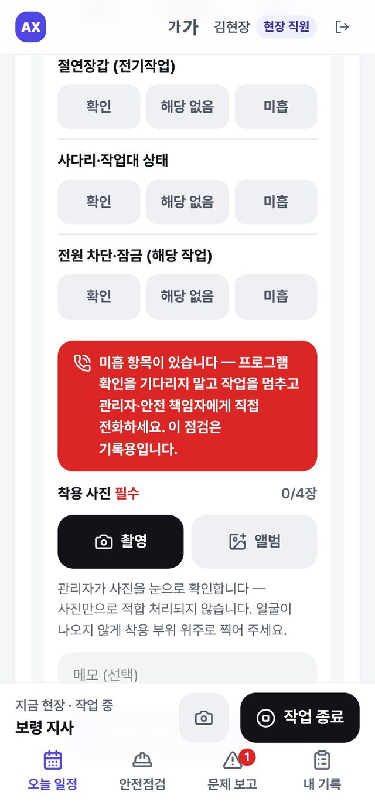
실제 화면
02
안전확인이 뒤늦게 이루어짐
작업 전·중·후 점검과 사진이 늦게 정리되면 누락·미흡을 제때 알기 어렵습니다.
점검 없이 작업 시작 · 종료를 누르면 먼저 점검을 요청
‘미흡’이면 즉시 작업 중지 · 직접 전화 안내 + 본사 1순위 표시
관리자 사진 육안 확인 → 보완 요청 → 조치 완료 이력
화면 8~11쪽
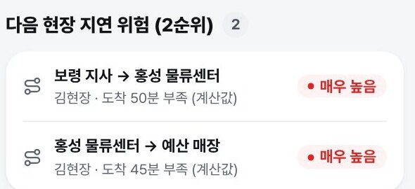
실제 화면
03
앞 현장 지연이 다음 현장으로 전파
한 곳이 늦어지면 같은 기사가 갈 다음 현장의 도착 가능 시간도 바뀝니다.
바뀐 예상 종료 + 이동시간으로 다음 현장 도착을 계산
홍성 50분 · 예산 45분 부족을 바로 표시 (계산값)
일정 조정마다 다시 판단 → 남은 위험 0까지 확인
화면 12~14쪽
이 자료의 표시실제 화면개발한 프로그램을 실제로 실행해 찍은 화면AI 연출 사진분위기 전달용 생성 이미지계산값규칙 기반 판단엔진 결과 (AI 예측 아님)가상 시나리오시험용 일정·인물·사진
H
하나정보통신HANA INFORMATION & COMMUNICATION
VENTURE APPEAL / 2026.11
TEST CASE한 사례로 세 문제를 끝까지
02 / 시험 사례 — 김현장 기사의 하루 3곳
하나의 사례로 세 문제를 끝까지 따라갑니다.
앞 현장 A보령 지사16:41 ~ 17:41
이동 20분 →
다음 현장 B홍성 물류센터18:11 ~ 19:11
이동 25분 →
그다음 현장 C예산 매장19:41 ~ 20:31
실제 화면관리자 PC16:38
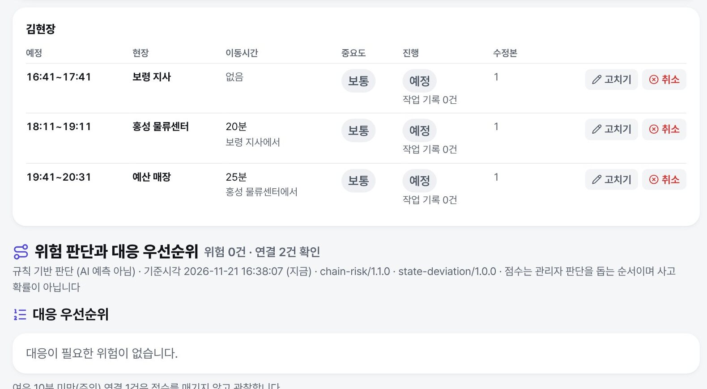
관리자 ‘현장·일정’에서 기사 · 현장 · 예정 시각 · 이동시간을 등록합니다. 등록할 때마다 판단엔진이 다음 현장 도착을 계산합니다(이 시점: 위험 0건 — 보령→홍성 여유 10분, 홍성→예산 여유 5분 ‘주의’).
실제 진행 순서 (화면 촬영 시각)
문제 2시작 전 안전점검 (착용 사진)
문제 2작업 시작
문제 130분째 진행 보고 없음 → 중간 확인
문제 1문제 보고 · 숙련 기술자 지원 요청 (발견 17:01)
문제 1본사 접수 → 지원 결정 → 현장 전달
문제 31차 조치: 홍성 일정 조정 → 재판단
문제 32차 조치: 예산 일정 조정 → 재판단
문제 2진행 중 점검 ‘미흡’ → 보완 요청 → 조치 완료
문제 2마무리 점검 → 작업 종료 → 해결 확인
촬영 조건 — 그대로 밝힙니다
개발환경(로컬 서버 · 로컬 DB)에서 실제 프로그램을 실행해 찍었습니다. 화면을 꾸미거나 합성하지 않았습니다.
관리자 PC(1440×900)와 기사 휴대폰(390×844)은 같은 컴퓨터의 별도 브라우저 세션입니다. 실제 휴대폰 시험은 Supabase 연결 뒤 진행합니다.
자료 구분은 ‘검증 시나리오(가상)’, 인물·현장·사진(‘시험용 이미지’)은 시험용입니다.
화면 시각은 촬영한 실제 시각입니다. 일정 간격·이동시간이 핵심 사례(09:00 기준)와 같아 계산 결과(50분·45분 부족)도 같습니다.
‘중간 확인’은 실제로 30분을 기다려 찍었습니다.
H
하나정보통신HANA INFORMATION & COMMUNICATION
VENTURE APPEAL / 2026.11
DEEP DIVE 01왜 보고가 늦어지는가
03 / 문제 1 · 초급 기술자 지원 지연
왜 현장기사는 혼자 오래 붙잡을까?
직원의 능력 부족이 아니라, 예상하지 못한 설치 상황에서 누구에게 · 언제 · 어떤 지원을 요청해야 하는지 분명하지 않은 운영 구조가 문제입니다.
AI 연출 사진
현장 인터뷰(2026-11-13)에서 확인한 상황
장비를 열어 보니 예상과 다른 조건.
혼자 원인을 찾다가 시간이 흐른 뒤에야 본사에 연락하는 경우가 있었습니다. 본사가 일찍 알았다면 숙련자를 보내거나 원격으로 도울 수 있었다는 의견도 확인했습니다.
WHY지연이 커지는 세 단계
01
예상 밖의 작업조건
분해·설치 뒤에야 설비·연결 조건이 계획과 다르다는 사실이 드러납니다.
02
보고 시점의 불확실성
스스로 해결할 수 있는지 판단하다 보고를 미룹니다. 본사는 막힌 사실을 모릅니다.
03
지원 결정까지 추가 대기
본사가 뒤늦게 상황을 듣고 숙련자·장비·다음 일정을 다시 확인합니다.
HOW프로그램이 바꾸는 절차 — 다음 3쪽에서 화면으로
1
보고가 없어도 먼저 묻기
예정 소요의 절반(최소 20분)이 지나도 진행 보고가 없으면 휴대폰·본사 화면에 ‘중간 확인’
2
터치 6단계로 바로 보고
유형 → 상태·발견시각 → 필요한 지원 → 바뀐 예상 종료 → 사진 → 보내기
3
본사 우선 확인
지원 요청 · 후속 현장 위험(계산값)으로 먼저 볼 사건을 위에 올림
4
지원 결정 · 현장 전달
접수 → 지원 결정(숙련 직원 투입) → 기사 휴대폰에 ‘본사에서 온 소식’
기록되는 시각: 문제 발견 · 보고(기기 시각) · 서버 기록 · 접수 · 지원 결정 · 현장 전달. 실제 현장에서 ‘발견 → 보고’, ‘보고 → 지원 결정’ 시간을 이 기록으로 잽니다. 중간 확인 기준(절반 · 20분)은 초안이며 회사 운영 기준으로 확정합니다.
H
하나정보통신HANA INFORMATION & COMMUNICATION
VENTURE APPEAL / 2026.11
PROCEDURE 01-1보고가 없어도 시스템이 먼저 묻는다
문제 1 · STEP 1 — 17:11 (작업 시작 16:41 + 30분)
30분째 연락이 없으면, 휴대폰과 본사가 동시에 압니다.
1-117:11 · 기사 휴대폰‘작업 시작 30분째예요 — 예정대로 되고 있나요?’ 버튼 세 개: 막혔어요(지원 요청) · 예정대로 · 늦어져요. 같은 때 안전점검 칸에 ‘진행 중 점검 차례’도 표시됩니다.
실제 화면관리자 PC17:11
관리자 대시보드 ‘연락 없이 늦어지는 현장(공동 1순위)’ — 보령 지사 ‘중간 확인 · 진행 보고 없음’. 본사는 기사의 연락을 기다리지 않고 먼저 전화할 수 있습니다.
판단 규칙 (규칙 기반 · AI 예측 아님)
중간 확인: 예정 소요시간의 절반(최소 20분)이 지났는데 작업 시작 뒤 진행 보고가 없음
예정 넘김: 예상 종료를 지났는데 새 예상 종료도 문제 보고도 없음
지원 중: 처리 중인 문제 보고가 있으면 목록에서 빠짐 (본사가 이미 앎)
이미 있는 기록(작업 시작·예상 종료 보고·문제 보고)만 봅니다. 기준 분은 초안입니다.
작업 시작16:41시작 전 점검 뒤
중간 확인 시각17:11예정 60분의 절반
그동안 진행 보고없음기사도 본사도 연락 전
기사 응답‘막혔어요’ 17:11→ 바로 문제 보고 (다음 쪽)
관리자 화면의 ‘전화 확인 → 대리 보고’로 본사가 먼저 전화해 받은 내용을 대신 기록할 수도 있습니다(출처: 관리자 대리 보고로 구분). 실제로 30분을 기다려 찍은 화면입니다.
H
하나정보통신HANA INFORMATION & COMMUNICATION
VENTURE APPEAL / 2026.11
PROCEDURE 01-2막혔어요 → 터치 6단계 보고
문제 1 · STEP 2 — 글자 입력 없이 고르기만 합니다
‘막혔어요’ 한 번이면 보고가 바로 열립니다.
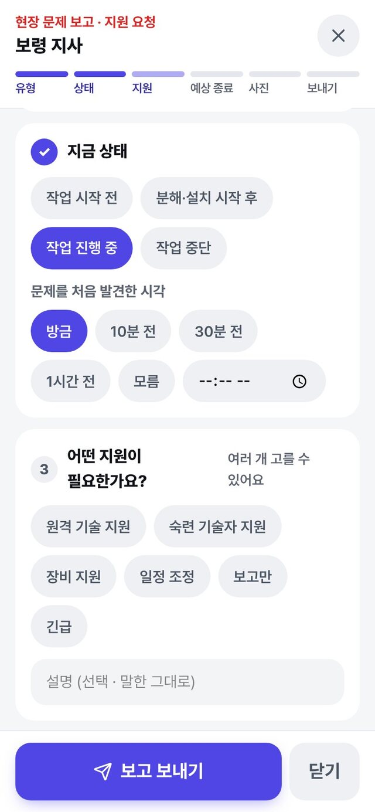
2-117:11 · 기사 휴대폰① 유형 — ‘예상과 다른 설치환경’. 맨 위 막대가 6단계 중 어디인지 보여 줍니다.
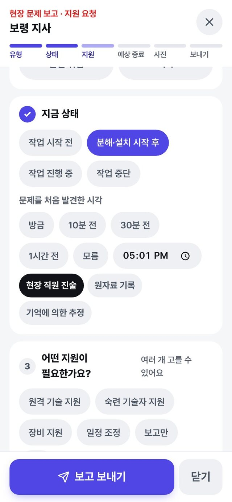
2-217:11 · 기사 휴대폰② 지금 상태 · 발견 시각 — ‘분해·설치 시작 후’, 처음 발견 ‘10분 전’. 발견과 보고 시각을 따로 남깁니다.
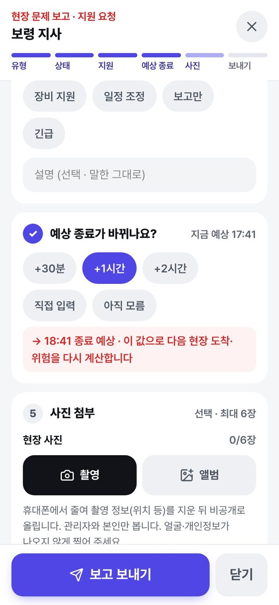
2-317:11 · 기사 휴대폰③ 지원 · ④ 예상 종료 — ‘숙련 기술자 지원’, ‘+1시간’. ‘이 값으로 다음 현장 도착·위험을 다시 계산’ 안내가 바로 뜹니다.
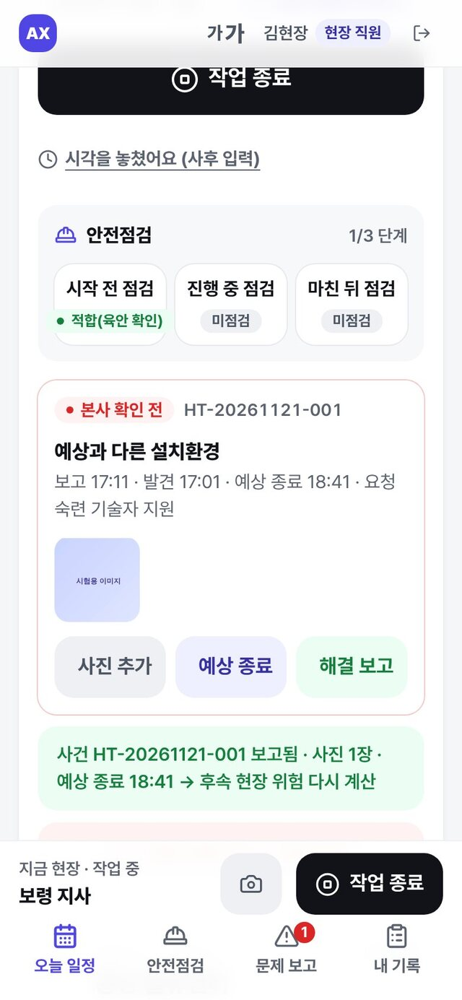
2-417:11 · 기사 휴대폰⑥ 보고 완료 — 사건번호 HT-20261121-001 · ‘본사 확인 전’. ⑤ 사진은 촬영정보(위치 등)를 지우고 비공개로 저장합니다.
문제 발견17:01현장 직원 진술
보고(누른 시각)17:11즉시 기록
발견 → 보고10분이 시험 기록
바뀐 예상 종료18:41예정 17:41 + 1시간
보고 방식이 이렇게 바뀝니다
기존혼자 해결을 시도 → 늦게 전화 → 말로 설명 → 본사가 받아 적고 다음 일정을 따로 계산
프로그램막히면 바로 ‘막혔어요’ → 고르기만 하는 6단계 → 발견·보고 시각 자동 기록 → 바뀐 예상 종료로 다음 현장 계산
이 보고 한 건에 남는 것
문제 유형 · 진행상황 · 요청 지원 · 긴급 여부 · 사진(촬영정보 제거)
발견 시각(진술) · 보고 시각(누른 시각) · 서버 기록 시각
바뀐 예상 종료 → ‘예상 종료 보고’ 1건으로 엔진 입력
사건번호 · 입력자 · 프로그램 버전
끊긴 곳에서 보내면 ‘다시 보내기’가 나오고, 같은 요청 번호로 보내 한 건만 저장됩니다(자동 시험으로 확인). 이 쪽의 시간은 가상 시나리오 시험 기록이며 실제 현장 측정값이 아닙니다.
H
하나정보통신HANA INFORMATION & COMMUNICATION
VENTURE APPEAL / 2026.11
PROCEDURE 01-3본사 우선 확인 → 지원 결정 → 현장 전달
문제 1 · STEP 3~4 — 본사가 먼저 볼 일을 위로, 결정은 기사 휴대폰까지
본사는 무엇을 먼저 할지 이유와 함께 봅니다.
실제 화면관리자 PC17:11
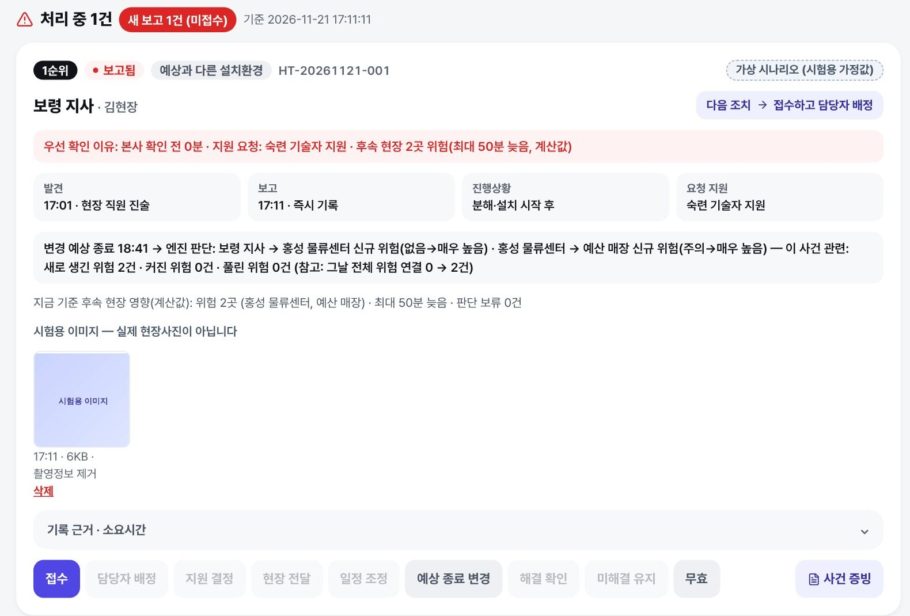
문제·지원 — 사건 카드. 우선 확인 이유: 지원 요청(숙련 기술자) · 후속 현장 2곳 위험(최대 50분 늦음, 계산값). 발견·보고 시각, 바뀐 예상 종료로 엔진이 다시 판단한 결과, 다음 조치가 한 카드에 있습니다.
실제 화면관리자 PC17:11
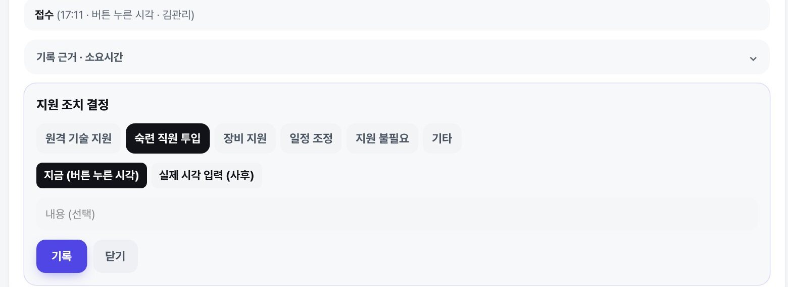
접수 → 지원 결정 — ‘숙련 직원 투입’을 고르고 기록. 조치마다 누가·언제 했는지 이력에 쌓입니다(지우지 않음).
317:11 · 기사 휴대폰기사 휴대폰 ‘본사에서 온 소식’ — 본사 지원 결정과 현장 전달(‘숙련 기술자가 30분 안에 도착합니다…’)이 자동 갱신으로 도착.
보고 → 접수5초이 시험 기록
접수 → 지원 결정1초이 시험 기록
지원 결정 → 현장 전달1초이 시험 기록
우선 확인 순서안전 → 긴급 → 미접수 → 지원 요청 → 후속 위험규칙
위 소요시간은 프로그램을 자동으로 조작한 시험이라 초 단위입니다. 실제 업무에서는 같은 항목을 같은 방식으로 기록해 비교합니다. 자동 갱신은 10~15초 주기 확인이며 실시간 감시가 아닙니다.
H
하나정보통신HANA INFORMATION & COMMUNICATION
VENTURE APPEAL / 2026.11
DEEP DIVE 02안전점검 관리의 원인과 해법
04 / 문제 2 · 안전점검 누락 및 확인 지연
안전은 ‘점검을 했는가’보다 제때 확인했는가.
현장과 본사가 떨어져 있어 작업 전·중·후 상태를 같은 시각에 확인하기 어렵습니다. 문제는 점검 자체의 부재라기보다 점검 시점 · 사진 · 관리자 확인의 연결이 느슨해질 수 있다는 것입니다.
AI 연출 사진AI 연출 사진AI 연출 사진
기존 업무에서 생길 수 있는 틈
현장마다 작업 착수·종료 시점이 달라 본사가 직접 보지 못합니다.
사진이나 체크를 나중에 정리하면 어느 단계에서 점검했는지 알기 어렵습니다.
미흡 항목을 발견해도 보완 요청·재확인 이력이 이어지지 않으면 조치 상황이 흐려집니다.
지금 구현된 처리 방식
작업 시작·종료 전에 그 단계 점검을 먼저 요청하고, 점검 없이 진행하면 본사에 표시합니다.
작업 전·중·후 사진과 제출 시각을 남겨 누락·늦은 제출을 구분합니다. 사진이 실제로 올라간 점검만 제출로 셉니다(v0.6.1).
관리자가 사진을 눈으로 확인하고, 미흡하면 보완을 요청·기록합니다.
HOW점검 시점을 업무 흐름에 넣습니다 — 다음 3쪽에서 화면으로
작업 전
안전장비 · 작업환경
‘작업 시작’ 전에 점검을 먼저 요청
작업 중
진행 상태 · 추가 위험
예정의 절반쯤 ‘진행 중 점검 차례’ 표시
작업 종료
마무리 점검 · 사진
‘작업 종료’ 전에 마무리 점검 요청
본사 확인
사진 육안 확인 · 보완 요청
적합 · 보완 요청 · 조치 완료 이력
중요한 한계 — 사진만으로 안전 적합성을 자동 판정하지 않습니다(사람이 눈으로 확인). 위험한 작업은 시스템 표시를 기다리지 말고 중단하고 직접 연락하도록 화면마다 안내합니다.
H
하나정보통신HANA INFORMATION & COMMUNICATION
VENTURE APPEAL / 2026.11
PROCEDURE 02-1작업 전 — 점검이 먼저
문제 2 · STEP 1 — 작업 시작보다 점검이 먼저 기록되게
점검 없이 시작하려 하면, 먼저 묻습니다.
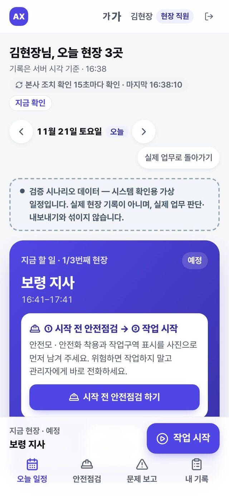
1-116:38 · 기사 휴대폰기사 첫 화면 — ‘지금 할 일’ 맨 위가 ① 시작 전 안전점검 → ② 작업 시작.
1-216:38 · 기사 휴대폰점검 없이 ‘작업 시작’을 누르면 확인 창. 그래도 시작하면 본사에 ‘점검 전 작업 시작’으로 표시됩니다.
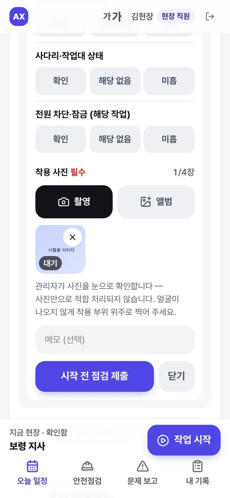
1-316:38 · 기사 휴대폰시작 전 점검 — 항목마다 확인 + 착용 사진(필수). 사진은 촬영정보를 지웁니다.
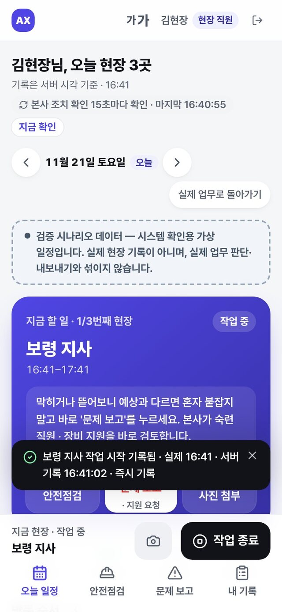
1-416:41 · 기사 휴대폰점검을 낸 뒤 작업 시작 — 묻지 않고 바로 기록(서버 시각 함께). 점검 16:38 → 시작 16:41.
실제 화면관리자 PC16:41
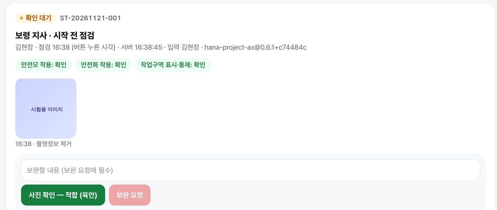
관리자 ‘안전관리’ — 사진 확인 대기 점검. 사진을 눈으로 본 뒤 ‘적합(육안)’ 또는 보완 요청.
실제 화면관리자 PC16:41
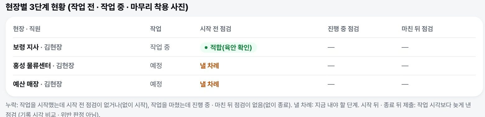
현장별 3단계 현황 — 보령 지사 시작 전 ‘적합(육안 확인)’, 진행 중·마친 뒤는 아직.
시작 전 점검 (착용 사진)16:38기사 휴대폰
작업 시작16:41점검 뒤에 기록
점검 시점 판정‘제때’점검 시각 ≤ 작업 시작 (기록 비교)
관리자 육안 확인16:41적합(육안)
‘제때 · 시작 뒤 제출 · 없음’은 기록 시각만 비교한 표시이며 위반 판정이 아닙니다. 현장 사정은 관리자가 전화로 확인합니다.
H
하나정보통신HANA INFORMATION & COMMUNICATION
VENTURE APPEAL / 2026.11
PROCEDURE 02-2작업 중 — 미흡이면 멈추고, 본사 1순위로
문제 2 · STEP 2 — 미흡 발견 → 작업 중지 안내 → 본사 1순위 표시 → 보완 요청
‘미흡’을 고르는 순간, 현장은 멈추고 본사는 압니다.
2-117:11 · 기사 휴대폰진행 중 점검에서 ‘미흡’(작업구역 표시·통제)을 고르면 빨간 안내: 프로그램 확인을 기다리지 말고 작업을 멈추고 관리자에게 직접 전화. 이 점검은 기록용입니다.
실제 화면관리자 PC17:11
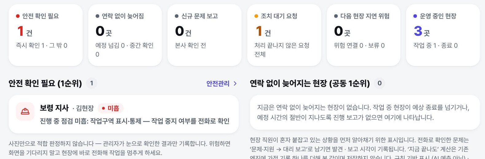
관리자 대시보드 맨 앞 ‘안전 확인 필요(1순위)’에 보령 지사 미흡이 바로 올라옵니다(10~15초 주기 확인).
실제 화면관리자 PC17:11
미흡 점검은 ‘적합’ 버튼이 막히고 보완 요청만 보낼 수 있습니다. 사진은 관리자가 눈으로 확인합니다.
H
하나정보통신HANA INFORMATION & COMMUNICATION
VENTURE APPEAL / 2026.11
PROCEDURE 02-3보완 → 조치 완료 → 마무리 점검
문제 2 · STEP 3~4 — 보완 제출 → 조치 완료 / 마무리 점검 없이 끝내려 하면 먼저 묻기
보완 이력과 세 단계 점검이 한 곳에 남습니다.
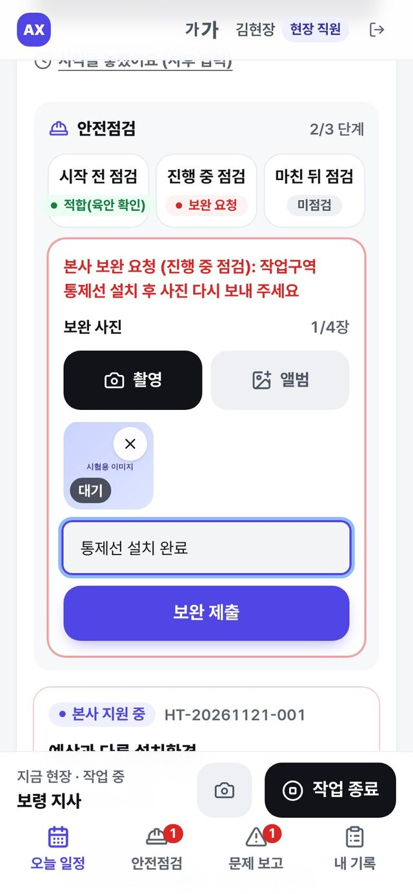
317:11 · 기사 휴대폰보완 요청 도착 → 보완 사진 + ‘통제선 설치 완료’ → 보완 제출. 처음 점검은 그대로 두고 보완 이력이 덧붙습니다.
실제 화면관리자 PC17:11
보완 확인 → 조치 완료 — 확인 이력: 관리자 확인(보완 필요) → 보완 제출 → 조치 완료. 모두 시각·입력자와 함께 남습니다.
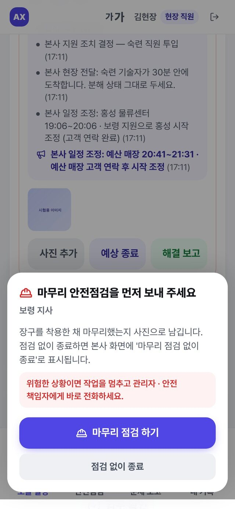
4-117:12 · 기사 휴대폰마무리 점검 없이 ‘작업 종료’ → ‘마무리 안전점검을 먼저 보내 주세요’.
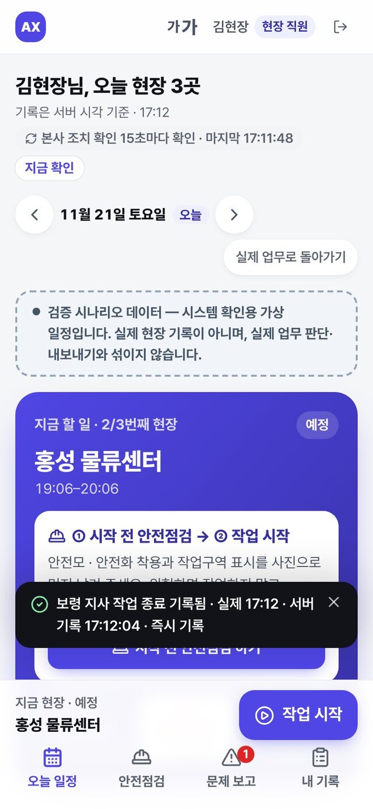
4-217:12 · 기사 휴대폰마무리 점검 → 작업 종료 — 화면은 다음 현장으로 넘어갑니다.
실제 화면관리자 PC17:12
현장별 3단계 현황 — 시작 전 ‘적합(육안)’ · 진행 중 ‘조치 완료’ · 마친 뒤 ‘적합(육안)’. 점검 없이 시작·종료했거나 늦게 냈으면 따로 표시됩니다.
실제 현장에서 잴 항목 (성과 측정 화면에 있음)
제때 제출 비율 — 시작 전 점검은 작업 시작 전에, 마무리 점검은 종료 전에
누락 · 사진 없는 점검 수 — 사진이 안 올라간 점검은 제출로 세지 않음
관리자 첫 확인 소요시간 — 제출 → 육안 확인
H
하나정보통신HANA INFORMATION & COMMUNICATION
VENTURE APPEAL / 2026.11
DEEP DIVE 03연쇄 지연의 원인과 계산
05 / 문제 3 · 연속 현장 일정의 파급효과
한 현장이 늦어지면, 왜 다음 현장도 흔들릴까?
예정된 작업시간만 보는 일정표에는 ‘앞 현장에서 얼마나 더 걸리는가’와 ‘다음 현장까지 이동하는 시간’이 함께 반영되지 않습니다. 그래서 지연 사실을 알아도 다음 고객에게 얼마나 일찍 연락해야 하는지 판단이 늦어질 수 있습니다.
AI 연출 사진
문제가 생기는 구조
종료시간이 바뀌면 도착 가능시간도 바뀝니다.
같은 기사가 하루에 여러 현장을 방문하면, 앞 작업의 종료 예상이 뒤로 밀릴 때 다음 현장으로의 이동 가능시간이 부족해집니다.
연쇄 지연은 일부 사례만 확인 · 발생 빈도 미검증
CALC이 사례에서 엔진이 한 계산 계산값
보령 종료 예상 (보고값)18:41
+
이동20분
=
홍성 도착 예상19:01
vs
홍성 예정 시작18:11
→
부족50분매우 높음
홍성 종료 예상 (60분 유지 가정)20:01
+
이동25분
=
예산 도착 예상20:26
vs
예산 예정 시작19:41
→
부족45분매우 높음
이 계산을 자동 시험으로 고정했습니다 tests-pilot/core-case.test.ts · 9건
보고 전: 보령→홍성 여유 10분 ‘없음’ · 홍성→예산 여유 5분 ‘주의’ — 위험 0
보고 직후: 50분 · 45분 부족, 둘 다 ‘매우 높음’ · 이 사건 관련 위험 2
1차 조치 뒤: 여유 5분 ‘주의’ · 50분 부족 (남음 1)
2차 조치 뒤: 여유 5분 · 여유 10분 — 위험 0
입력 순서를 섞어도 같은 결과
판단에 쓰는 값
입력: 예정 시작·종료 · 이동시간 · 작업 시작 · 예상 종료 보고 · 작업 종료
가정: 늦게 시작한 현장도 예정 소요시간만큼 걸린다
결과: 연결마다 도착 예상 · 여유/부족 · 등급 · 판단 근거 문장
기록: 입력 · 결과 · 규칙 버전(chain-risk/1.1.0) 저장, 다시 계산해 일치 확인
등급 기준(설정값): 여유 10분 이상 ‘없음’ · 여유 0~9분 ‘주의’ · 부족 1~9분 ‘중간’ · 10~29분 ‘높음’ · 30분 이상 ‘매우 높음’. 회사 운영 기준으로 확정하기 전의 값입니다. 같은 입력이면 항상 같은 결과가 나오며(자동 시험 9건으로 고정), AI 학습·예측 모델이 아닙니다.
H
하나정보통신HANA INFORMATION & COMMUNICATION
VENTURE APPEAL / 2026.11
PROCEDURE 03-1보고 직후 — 다음 현장 2곳 위험
문제 3 · STEP 1 — 기사가 예상 종료를 바꾸는 순간 다시 계산 (17:11)
‘보령이 늦는다’가 아니라 ‘홍성 50분 · 예산 45분 부족’.
실제 화면관리자 PC17:11
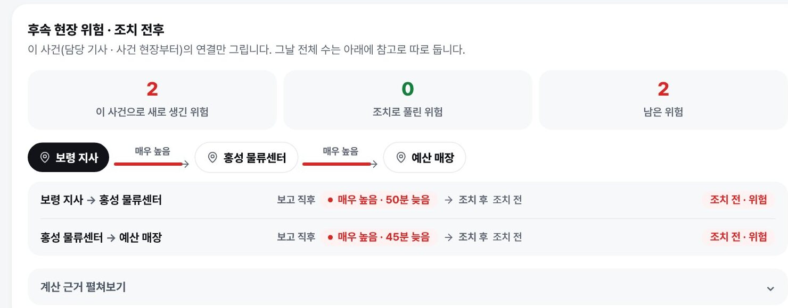
사건 상세 ‘후속 현장 위험 · 조치 전후’ — 보령 지사 → 홍성 물류센터 매우 높음 · 50분 늦음, 홍성 물류센터 → 예산 매장 매우 높음 · 45분 늦음. 이 사건으로 새로 생긴 위험 2 · 남은 위험 2.
실제 화면관리자 PC17:11
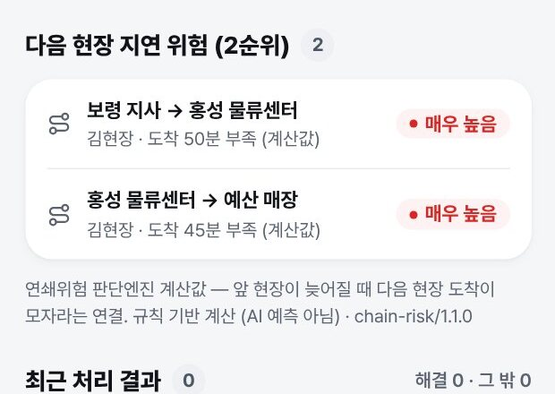
관리자 대시보드 — ‘우선 처리할 사건’ 옆 ‘다음 현장 지연 위험(2순위)’에 두 연결이 계산값과 함께 바로 올라옵니다.
단순 기록과 다른 점
단순 기록“보령 작업이 늦는다”는 사실을 저장합니다.
이 프로그램“홍성 시작까지 50분 부족하고, 홍성을 늦추면 예산에도 영향이 남는다”는 연결 결과를 계산합니다. 고객에게 얼마나 일찍 연락할지 판단할 근거가 생깁니다.
H
하나정보통신HANA INFORMATION & COMMUNICATION
VENTURE APPEAL / 2026.11
PROCEDURE 03-2조치하면 다시 판단 — 남은 위험을 숨기지 않음
문제 3 · STEP 2~3 — 일정 조정 → 재판단 → 2차 조정 → 남은 위험 0
조치할 때마다 다시 계산해, 남은 위험을 보여 줍니다.
실제 화면관리자 PC17:11
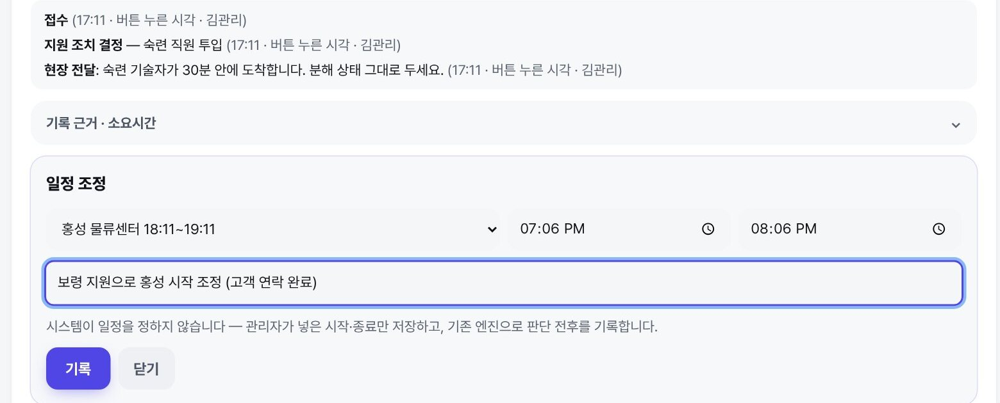
1차 조치 입력 — 사건 카드 ‘일정 조정’: 홍성 물류센터를 19:06~20:06로(고객 연락 완료). 시스템이 일정을 정하지 않고, 관리자가 넣은 값으로 다시 판단합니다.
실제 화면관리자 PC17:11
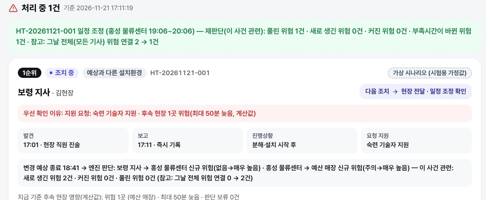
1차 재판단 — 풀린 위험 1건(보령→홍성) · 부족시간이 바뀐 위험 1건(홍성→예산). 우선 확인 이유가 ‘후속 현장 1곳 위험(최대 50분 늦음)’으로 바뀝니다.
실제 화면관리자 PC17:11
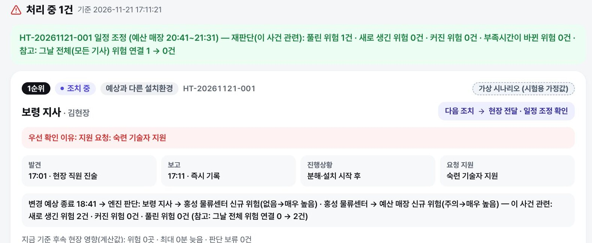
2차 조치 → 재판단 — 예산 매장을 20:41~21:31로 조정. 풀린 위험 1건, 그날 위험 연결 1 → 0건.
조치마다 바뀐 판단 (엔진 계산값)
연결
보고 직후
1차 조치 후
2차 조치 후
보령 → 홍성
50분 부족
여유 5분 · 주의
여유 5분 · 주의
홍성 → 예산
45분 부족
50분 부족
여유 10분 · 없음
1차 조치로 앞 연결은 풀렸지만 홍성을 늦춘 만큼 예산 부족이 커졌습니다. 프로그램은 이것을 숨기지 않고 보여 주고, 관리자는 2차 조치를 합니다.
실제 화면관리자 PC17:11
사건 상세 ‘조치 전후’ — 보령→홍성 ‘매우 높음 · 50분 늦음’ → ‘주의 · 여유 5분’(해소), 홍성→예산 ‘매우 높음 · 45분 늦음’ → ‘없음 · 여유 10분’(해소). 조치로 풀린 위험 2 · 남은 위험 0.
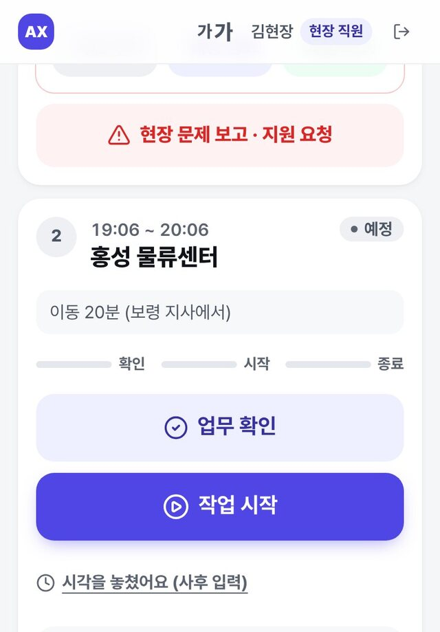
317:11 · 기사 휴대폰기사 휴대폰 — 조정된 홍성 물류센터 시각이 카드에 바로 반영됩니다.
H
하나정보통신HANA INFORMATION & COMMUNICATION
VENTURE APPEAL / 2026.11
RECORD한 사건의 기록이 증빙이 됩니다
06 / 사건 하나 = 문제 보고 → 엔진 계산 → 관리자 조치 → 조치 전후
화면에서 한 일이 그대로 증빙으로 남습니다.
실제 화면관리자 PC17:12
사건 증빙 HT-20261121-001 — 핵심 흐름 요약. 현장 문제(입력값) → 엔진 입력·계산(보고 직후) → 관리자 조치·처리 시간 → 조치 전후 → 측정. 인쇄(PDF) · CSV · JSON으로 내보내며, 맨 위에 ‘가상 시나리오’가 자동 표기됩니다.
무엇이 남나
시각 3종 구분: 누른 시각 · 서버 기록 시각 · 사후 입력한 시각
입력자 · 출처(현장 직원 / 관리자 대리 보고) · 프로그램 버전
고치지 않고 추가만 — 정정 · 무효도 기록으로 남김
같은 요청은 한 번만 저장(요청 번호)
자료 구분: 실제 업무 / 현장정보 재현 / 가상 시나리오 — 섞이지 않음
현장 실증에서 모을 핵심 지표 — 같은 정의로 잽니다
①문제 발견 → 보고 시간
②보고 → 지원 결정 시간
③다음 현장 지연을 미리 안 시간 (계산 시점 → 실제 도착)
④안전점검 제때 제출 비율 · 관리자 확인 소요시간
개선율 · 원가 절감액은 실제 비교 기록이 생기기 전에는 쓰지 않습니다. 이 문서의 수치는 계산값이거나 가상 시나리오 시험 기록입니다.
H
하나정보통신HANA INFORMATION & COMMUNICATION
VENTURE APPEAL / 2026.11
EVIDENCE개발 · 검증 근거
07 / 증거가 있는 것과 없는 것을 구분합니다
우리는 지금 어디까지 만들었나.
구현 상태v0.6.1현장기사 모바일 · 관리자 PC · 안전점검 · 문제 보고 · 연쇄위험 판단
개발환경 회귀시험 기록746개lint · build 및 단위 · DB · 화면 시험 통과 (2026-11-18, 저장소 기록) · 현장 검증 아님
구분
이 자료에서 해당하는 것
상태
실제 구현한 기능
이 문서의 모든 화면(휴대폰 · PC) — 안전점검 · 문제 보고 · 지원 처리 · 일정 조정 · 판단 기록 · 증빙
구현 · 화면 확인
자동화 · 규칙 기반 판단
다음 현장 도착 여유/부족 · 위험 등급 · 우선 확인 순서 · 조치 후 재판단 · 중간 확인 · 점검 시점
구현 · 자동시험 기준값은 초안
가상 시나리오 시험
보령 → 홍성 → 예산 사례 (계산값 자동시험 9건 + 이 문서의 실제 실행 화면)
완료
실제 현장 실증 결과
실제 직원 · 실제 휴대폰 · 실제 업무 기록
0건 · 계획
아직 검증되지 않은 효과
보고 시간 단축 · 지원 결정 단축 · 고객 연락 앞당김 · 원가 절감
측정 전 · 수치 쓰지 않음
01
특허 출원
1건
10-2026-0173957 2026.09.11 출원
등록된 특허가 아님
02
판단엔진
구현
예상 종료 · 이동 · 후속 시작시각 비교 · 조정 후 재판단
코드 · 시험 보유
03
실행 화면
41장
2026.11.21 실제 프로그램 실행 촬영
가상 시나리오 데이터
04
실제 현장성과
미확보
직원 실제 사용기록 · 절감시간 · 효과 측정
단기 실증 계획
개발 경과
09.11관련 특허 출원
10.28연쇄 위험판단 엔진 구현
11.13현장 책임자 인터뷰 반영
11.16안전 1순위 · 조기 확인
11.18v0.6.1 안정화 · 자체 시험
11.21실행 화면 촬영
출원 뒤에 추가한 기능(현장 문제 보고 · 안전점검 · 조기 확인 · v0.6.1 안정화)은 출원 당시부터 있던 것으로 쓰지 않습니다. 특허 기술구성과의 대응은 용어 대응이며 청구항 대조 결과가 아닙니다.
H
하나정보통신HANA INFORMATION & COMMUNICATION
VENTURE APPEAL / 2026.11
REVIEW RESPONSE보완사유별 답변
08 / 이의신청 보완 논리 + 실제 자료 확보
심사위원의 질문에 화면으로 답합니다.
지적 01
“무슨 기술인지 명확하지 않다.”
현장 상태 변화(예상 종료)를 받아 다음 현장 도착 부족을 계산하고, 먼저 조치할 일을 정합니다. → 12~14쪽 홍성 50분 · 예산 45분 부족 → 조치 후 0
지적 02
“차별성이 잘 보이지 않는다.”
기록 공유를 넘어 앞·뒤 현장을 연결해 이동·시작시간 부족을 계산하고, 조치 뒤 다시 판단합니다. → 13쪽 단순 기록과 비교
지적 03
“구현·시험 근거가 부족하다.”
실제 실행 화면 41장, 개발환경 회귀시험 746개, 핵심 사례 계산 자동시험 9건. 실제 현장 실증과는 구분합니다. → 3 · 16쪽
지적 04
“개발 가능성이 불명확하다.”
세 문제 각각의 절차가 이미 동작합니다(4~14쪽). 남은 것은 운영 연결과 현장 실증이며 단계별 계획을 아래에 둡니다.
NEXT짧은 기간에도 가능한 증거 확보 — 기록을 꾸미지 않고 단계별로 구분
AI 연출 사진
1
실제 현장 문제 1~3건 확인
현장 책임자와 최근 사례를 확인하고, 가능한 경우 원본 작업일지 · 메신저 · 사진을 확보합니다.
구분: 과거 사례 사실 확인 (현장정보 재현)
AI 연출 사진
2
실제 기기로 프로그램 사용
운영 DB 연결 뒤 관리자 PC · 기사 휴대폰 2대로 이 문서의 흐름을 실제 기기에서 실행하고 기록을 저장합니다.
구분: 실제 기기 연동시험 (시험 A)
AI 연출 사진
3
실제 업무 1건 이상 기록
실제 현장 작업 1건 이상에서 안전점검 · 문제 보고 · 지원 결정 · 일정 조정을 기록하고, 계산 결과를 실무 책임자가 확인합니다.
구분: 실제 업무 (가장 강한 증거)
이의신청 보완의 핵심 메시지
“복잡한 AX 플랫폼 전체를 내세우기보다, 여러 현장의 지연 위험을 계산하고 관리자 대응을 돕는 핵심기술을 구현했습니다. 세 가지 현장 문제를 다루는 절차가 실제 프로그램에서 동작함을 화면으로 확인했고, 실제 현장 적용으로 판단 기준과 업무효과를 검증해 가겠습니다.”
 실제 화면
실제 화면 AI 연출 사진
AI 연출 사진

 AI 연출 사진
AI 연출 사진 AI 연출 사진
AI 연출 사진


 AI 연출 사진
AI 연출 사진 AI 연출 사진
AI 연출 사진